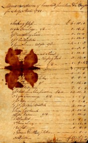

by
Stefan Bielinski
Ann Lott was born on Long Island in September 1747. She was the daughter of John E. and Jannetje Probasco Lott - prominent residents of "Flatlands," Kings County.
How Ann Lott came to Albany is unknown. Perhaps she accompanied members of her family north during the American Revolution.
 In June 1782, she became the second wife of Albany businessman Henry Staats. Her family provided an approrpriate dowry. Forty years old, she gave birth to her third child in 1787. She later received acreage on Long Island from her father's estate.
{kind=link}
These Staatses lived in the old Schuyler house on State Street where Ann helped raise the children of her husband's first marriage. As late as 1810, their home was attended by six slaves!
Her husband died in 1814. The next year, she joined the second Dutch Reformed Church. For a time, she was listed in the city directory at 86 State Street as the "widow of Henry Staats."
Ann Lott Staats died in February 1829 at age eighty-two. Following a funeral "from her late home at 2 South Pearl Street," she was buried in the Dutch church cemetery!.

notes
 Sources: The life of Ann Lott Staats is CAP biography
number 2050. This profile is derived chiefly from family
and community-based resources.
Sources: The life of Ann Lott Staats is CAP biography
number 2050. This profile is derived chiefly from family
and community-based resources.
first posted: 1/30/03